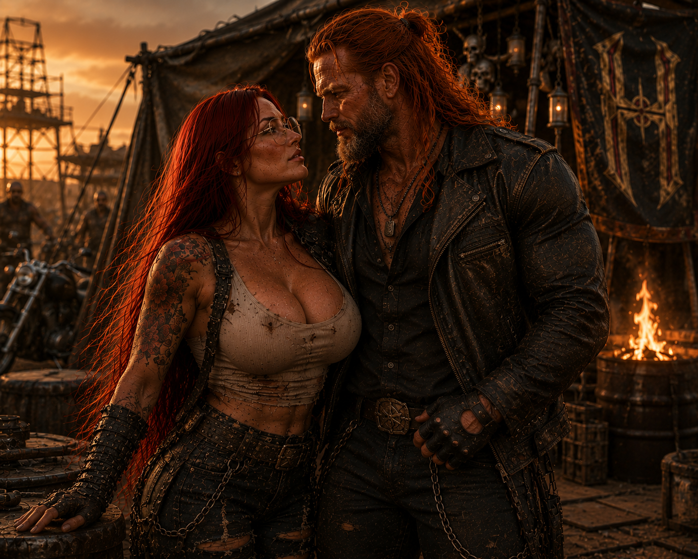

Registros
fotográficos.
Fragmentos preservados de Jack Connor: comandante, irmão, marido e o homem que continua conduzindo todos pela tempestade.
07 ARQUIVOSINTEGRIDADE // PARCIALACESSO // AUTORIZADO



Fragmentos preservados de Jack Connor: comandante, irmão, marido e o homem que continua conduzindo todos pela tempestade.
